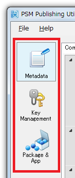
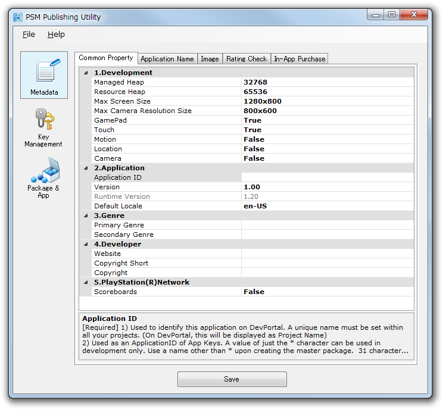
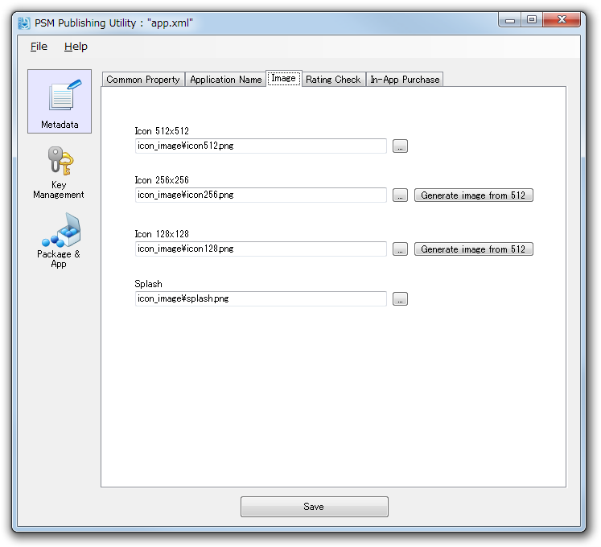
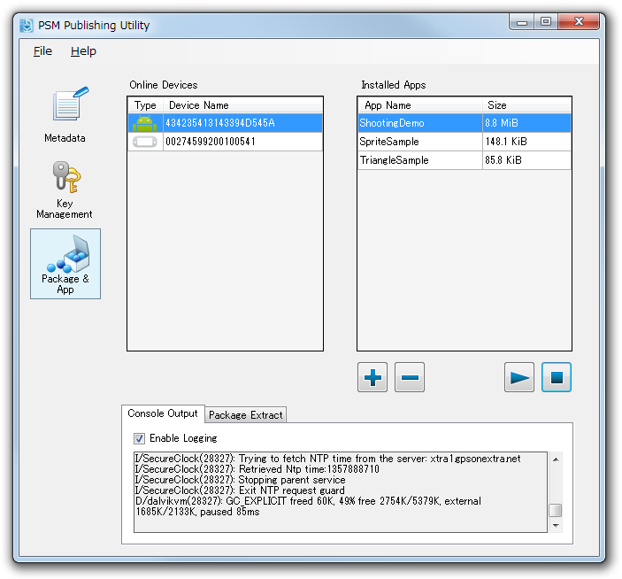
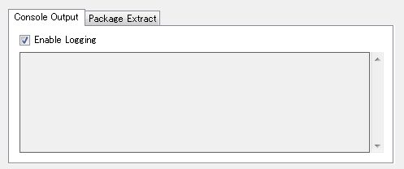

この文書ではPublishing Utilityの使い方について説明します。
Contents
Publishing Utilityは、アプリ情報ファイル(app.xml)の編集、実機開発に用いる鍵の管理、マスターパッケージの管理等の、開発・テスト・販売のための情報設定などの広範に渡る作業を行うGUIツールです。
デスクトップ上の [Publishing Utility]のアイコンをダブルクリックしてPublishing Utilityを起動してください。

図1 Publishing Utility
あるいは PSM Studio 内から app.xml を右クリックし、[Edit with PSM Publishing Utility] を選んでください(app.xml を読み込んでの起動)。

図2 PSM StudioからPublishing Utilityを起動
Publishing Utiliry は、複数の機能群を３つのカテゴリに分類して提供します
- Metadata カテゴリ： アプリ情報ファイル(app.xml)の値の設定を行います
- Key Management カテゴリ： 実機上でアプリを動かす為の鍵の管理を行います
- Package & App カテゴリ： デバイスへのアプリのインストール・実行等を行います
カテゴリボタンをクリックして、アクティブなカテゴリを切り替えてください。
図3 カテゴリの切り替え
主にアプリを販売する為に必要な情報を編集します。
app.xmlを開く
アプリ情報は、各PSMプロジェクト内のapp.xmlに記述されています。
アプリ情報を編集するには、[メニュー] - [File] - [Load]でapp.xmlを開きます。
設定が完了したら、[Save]ボタンを押して保存します。
なお、app.xmlは、プロジェクトをビルドする時、app.infoに変換されます。app.infoはバイナリ版app.xmlで、アプリ実行時に使用されます。
Common Propertyタブでは共通で使用される情報を設定します。
各項目をクリックして値を入力します。ウィンドウの下部に項目を補足する注釈が表示されます。参考にして下さい。
図4 Common Property
開発
最初は開発に関連するフィールドです。
メモリサイズ設定
項目名 概要 設定値 Managed Heap アプリ内で動的に確保可能なメモリサイズ 単位は KiB。デフォルト値は 32768 (32MiB) Resource Heap オーディオのデータやイメージのデータ、 テクスチャなどに割り当てるメモリサイズ 単位は KiB。デフォルト値は 65536 (64MiB) ※ managed_heap_size と resource_heap_size の合計が 96MiB を超えることはできません。
最大スクリーンサイズ
項目名 概要 設定値 Max Screen Size スクリーンの最大サイズを指定します。 最大サイズ以上のディスプレイ解像度をもつ実機でPSMアプリを実行した場合、 スクリーンはスケーリングされて表示されます。 1280x800, 1920x1200。 デフォルト値は1280x800 カメラの最大解像度
項目名 概要 設定値 Max Camera Resolution Size カメラのプレビュー画面で表示される画像の最大サイズを指定します。 800x600, 2048x1536。 デフォルト値は800x600 入力デバイス設定
項目名 概要 設定値 (使用:True / 不使用:False) GamePad ゲームパッドの有効/無効を設定します。物理コントローラが無いデバイスでは、 代わりに オンスクリーンコントローラ が有効になります。 デフォルト値は True Touch タッチパネルの有効/無効を設定します。 デフォルト値は True Motion モーションセンサーの有効/無効を設定します。 デフォルト値は False Location 位置センサーの有効/無効を設定します。 デフォルト値は False Camera カメラの有効/無効を設定します。 デフォルト値は False アプリ
Application ID
アプリを表す識別子として用いられます。
- DevPortal 上に登録したアプリを識別する為に用います。[a-zA-Z0-9_-] の文字セットで識別しやすい名前を付けてください。
- コンテンツ保護機構にも関係します。開発中のみ * という一文字の値を用いる事が出来ます。（参照： Application IDのワイルドカード機能 ）
Version
アプリのバージョンを指定して下さい。1.00-99.99 の値で小数点以下二桁です。 既にストア上にて販売しているバージョンがある場合は、それと比較し数字を上げなければなりません。 一方、申請中のアプリを一旦取り下げたり、または弊社審査にて差し戻しがあった後に、再度マスター提出をする場合には必ずしも数字をあげる必要はありません。
Default Locale
ストア上で用いられる標準言語を指定します。エンドユーザーのストアの表示言語設定がアプリ側で言語が未定義だった場合にのみ用いられます。可能な限り "en-US" を選んでください。
ジャンル
ストア上で取り扱われるジャンルを指定します。Primary と Secondary があり、Primary は設定必須です。
Primary Genre
ストア内で分類と検索に用いられます。
Secondary Genre
設定可能ですが、現在使用されていません。ストア内の検索に用いられる予定です。
開発者
Website
ストア上で表示されるアプリ・開発者のサポート用のウェブサイトを指定して下さい。
Copyright
著作権情報を記述したUTF-8テキストファイルを指定します。開発者の情報、および付随して記述すべき著作権情報を記載してください。 後ほど、弊社、また PSM SDK に関連する著作権情報が自動で末尾に追加されます。エンドユーザー環境で実機上で閲覧可能になります。
Copyright Short
ストア上で単行表示される開発元の著作権表記を記入して下さい。
例:
Copyright (C) 2013 Foo Bar Inc. All Rights Reserved.
Application Nameタブでは対応言語ごとにアプリ名を設定します。

図5 Application Name
対応言語ごとにLong Name、Short Nameを入力してください。
- Long Nameはこのアプリの正式名称です。ストア上などで表示されます。
- Short NameはPSMアプリのアイコンとともに表示される表記です。
- Long NameとShort Nameは同じでも構いません。
Localeの略称は次の言語に対応しています。
Locale 言語 en-US 英語(アメリカ) en-GB 英語(イギリス) ja-JP 日本語 fr-FR フランス語 es-ES スペイン語 de-DE ドイツ語 it-IT イタリア語 nl-NL オランダ語 pt-PT ポルトガル語 pt-BR ポルトガル語(ブラジル) ru-RU ロシア語 ko-KR 韓国語 zh-Hant 中国語 繁体字 zh-Hans 中国語 簡体字 fi-FI フィンランド語 sv-SE スウェーデン語 da-DK デンマーク語 nb-NO ノルウェー語 pl-PL ポーランド語
画像ファイルを指定します。
図6 Image
Icon
- Icon欄の画像ファイルには、 32bit full color PNG 形式のファイルを指定します。サイズは 512x512, 256x256, 128x128 の３種類です。
- Icon欄で指定した画像ファイルは、PSMアプリのアイコンや、ストアでの表示などに利用されます。
- アイコンに使用するPNG形式ファイルのアルファ値は、すべて0xFF(不透明)でなければいけません。
Splash
- Splash欄には、 854x480 8bit Index Color PNG 形式のファイルを指定します。
- Splash欄で指定した画像ファイルは、PS Vita の Live Area にて Gate (中央ボタン) をタップしてからゲームが起動するまでの間に表示されます。
Rating CheckタブではPSMアプリのレーティングを設定します。

図7 Rating Check
レーティングは次の3つのチェックツールで判定します。
- PEGI Express(Pan European Game Information)。欧州のレーティング。
- ESRB Short Form (Entertainment Software Rating Board)。北米のレーティング。
- PlayStation(R)Mobile Age Rating System。弊社のレーティングシステム。
[Common Property] - [3. Genre]で指定したジャンルがゲームの場合、上記の3つのレーティングチェックを全ておこなう必要があります。指定したジャンルがゲームでない場合、PlayStation(R)Mobile Age Rating Systemでのみレーティングチェックをおこなってください。
タブ内のURLまたはボタンをクリックし、各サイトでレーティングの判定をおこなってください。
3つの判定結果のうち、一番高い数値がそのPSMアプリのレーティングとして適用されます。
判定が完了したら判定結果を各フィールドに入力します。
PEGI express レーティング結果の入力
PEGI expressのWebサイトでレーティングチェックが完了すると、PEGIlicense_XXX.pdfというファイルが取得できます。
そのファイルに、Age Rating Logo、Registered Number、Content Descriptorsの情報が記載されているので、その情報をもとに対応する各フィールドに値を入力してください。

図8 PEGI
ESRB Short Form レーティング結果の入力
ESRB Short FormのWebサイトでレーティングチェックが完了すると、xxx.pdfというファイルが取得できます。
そのファイルに、Ratign Category、Certificate Codeの情報が記載されているので、その情報をもとに対応する各フィールドに値を入力してください。

図9 ESRB Short Form
PlayStation(R)Mobile Age Rating System
弊社のレーティングシステムでチェックを行うには [Start Rating Check]ボタンをクリックします。
そして、ウィザードに表示される設問に回答してゆくと判定が完了します。

図10 PlayStation(R)Mobile Age Rating System
In-App Purchaseタブではアプリ内課金のプロダクトデータを作成・編集します。
ここではアイテムの定義と各国語での名称の設定を行い、価格の設定は別途 DevPortal より行います。

図11 In-App Purchase
- Support Localeで、対応言語のチェックボックスにチェックを入れます。
- Product Labelにプロダクトのラベル名を入力します。
ラベル名の命名には次の規約があります。
- ラベル名に使用できる文字は、数字と大文字のアルファベットのみです。
- ラベル名の文字数は6文字固定です。
- 000000は予約されているので使用できません。
- 入力したラベル名が規約を満たしていれば、[Add Product]ボタンが使用可能になります。プロダクトを追加するにはボタンを押してください。
- プロダクトが追加されるので、各対応言語で名称を入力します。消費型のプロダクトにする場合、Consumableのチェックボックスをチェックしてください。
制限事項
プロダクトを作成するときは、以下の点に注意してください。
- プロダクトは合計20個まで作成することができます。それ以上は作成することができません。
- マスター提出後、プロダクトが正式に登録されると、以降そのプロダクトのラベル名を変更・削除することはできません。変更・削除した場合、データの正当性チェックでエラーが発生します。
- プロダクトが正式に登録されたあとには、プロダクトのローカル名の変更・削除はできません。
- プロダクトが正式に登録されたあとでも、プロダクト、ローカル名の追加は可能です。
詳細は 実機でPSMアプリを実行するための鍵の作成について をご覧ください
アプリパッケージのインストール、アンインストール、実行、停止等が行えます。 その他、パッケージファイルの展開、アプリの文字列出力の表示が行えます。
図12 Package&Appカテゴリ
画面左の [Online Devices] リストよりデバイスを選択すると、そのデバイス上にインストールされたアプリが画面右の [Installed Apps] リストに表示されます。

図13 アプリ操作ボタン
アプリのインストール ： [Online Devices] で選択したデバイスにアプリをインストールします。この時に、鍵も同時にインストールされます。
アプリのアンインストール： [Installed Apps] で選択したアプリを、デバイスからアンインストールします。この時、アプリの データも消去される 点にご注意ください。
アプリの実行： [Installed Apps] で選択したアプリを起動します。
アプリの停止： [Online Devices] で選択したデバイス上で動いているアプリを停止します。
タブ内の機能
コンソール出力： 画面下部のタブを選択すると、[Online Devices] で選択したデバイスの文字列出力が表示されます。
パッケージの展開： 画面下部のタブを選択し、その中の左側のパネルにパッケージ (.psmp/.psdp) をドラッグ＆ドロップして下さい。 入力パッケージの横に .extracted という拡張子が付いたディレクトリとして展開されます。
図14 コンソール出力とパッケージの展開